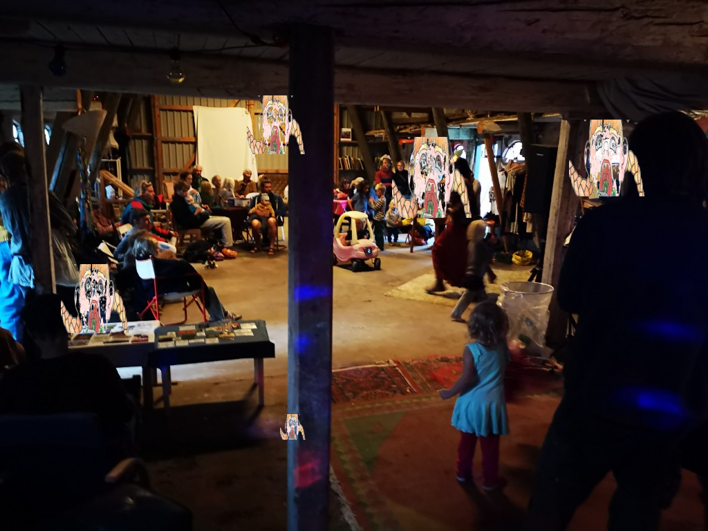
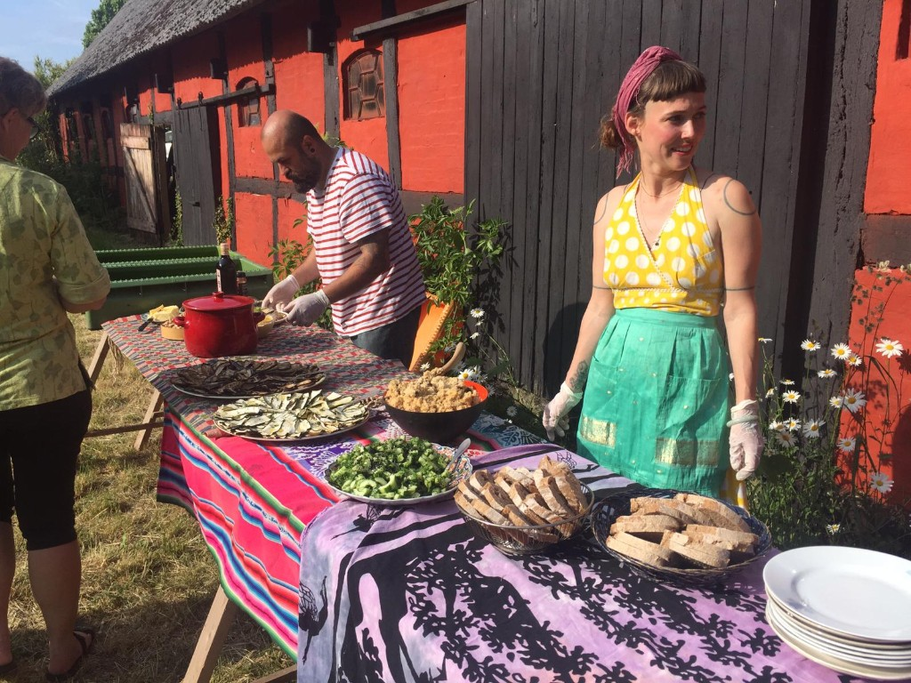
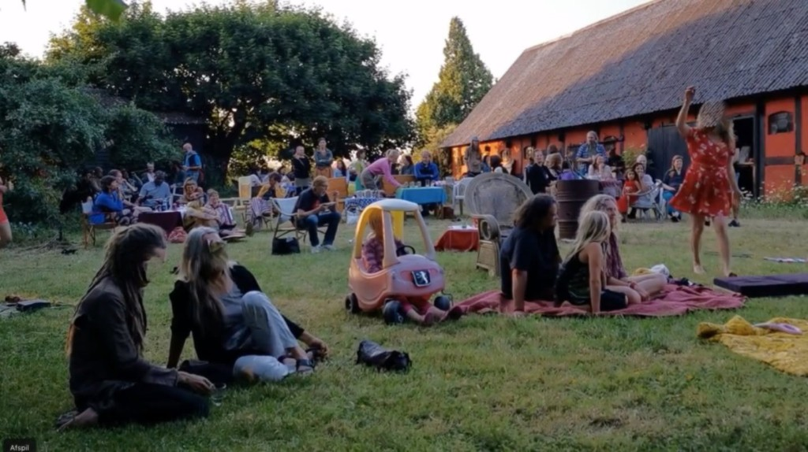
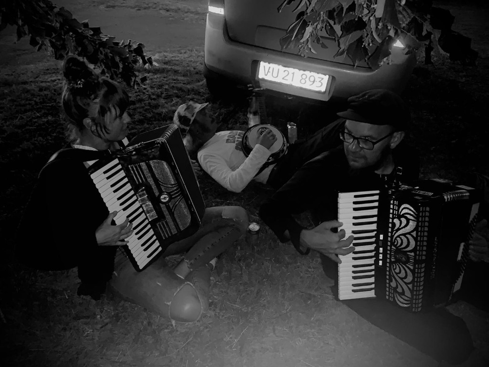
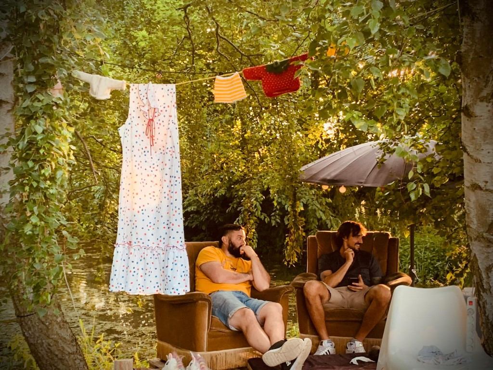
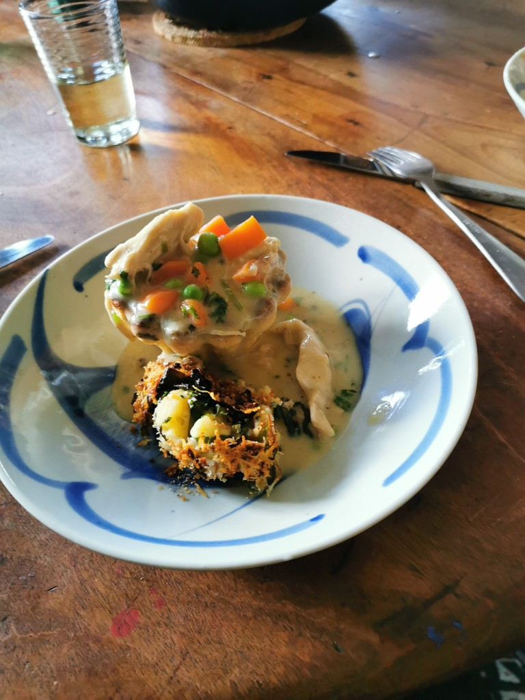
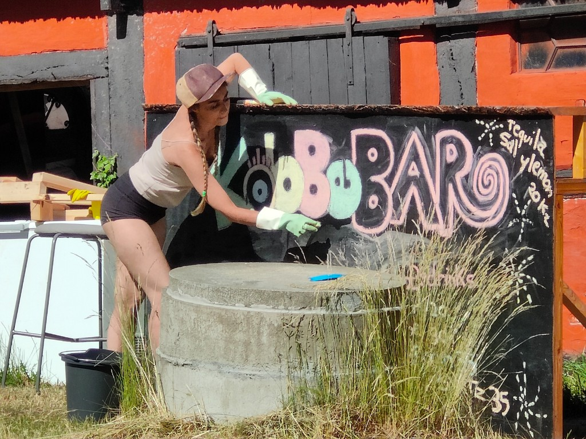
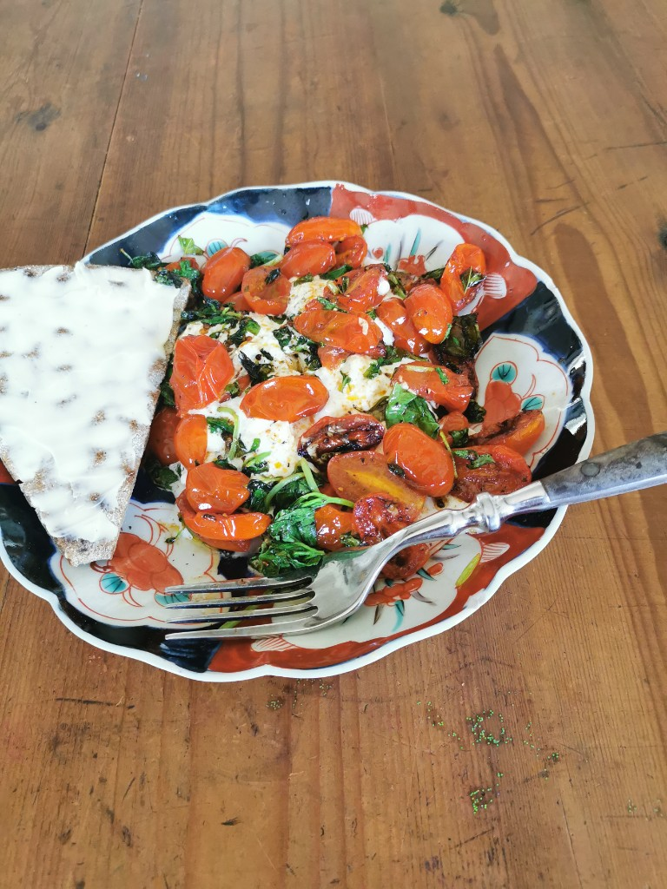

På Kobbegaard har vi afholdt Open Mic-aftener hver måned i sommersæsonen gennem en årrække. Her har alle kunnet dukke op og få mulighed for at dele deres talent, idéer eller kreative udtryk.
Aftenerne har budt på mange sjove, smukke og uforglemmelige oplevelser – blandt andet skyggeteater, human beatbox, mavedans, digtoplæsninger, kunstperformances, musikalske optrædener, børneoptrædener, teater og meget mere.
Formålet har været at skabe et uformelt rum, hvor mennesker kunne mødes, prøve kræfter med scenen og inspirere hinanden. Uden tilmelding og uden krav om at være professionel – bare lysten til at bidrage og være med.







